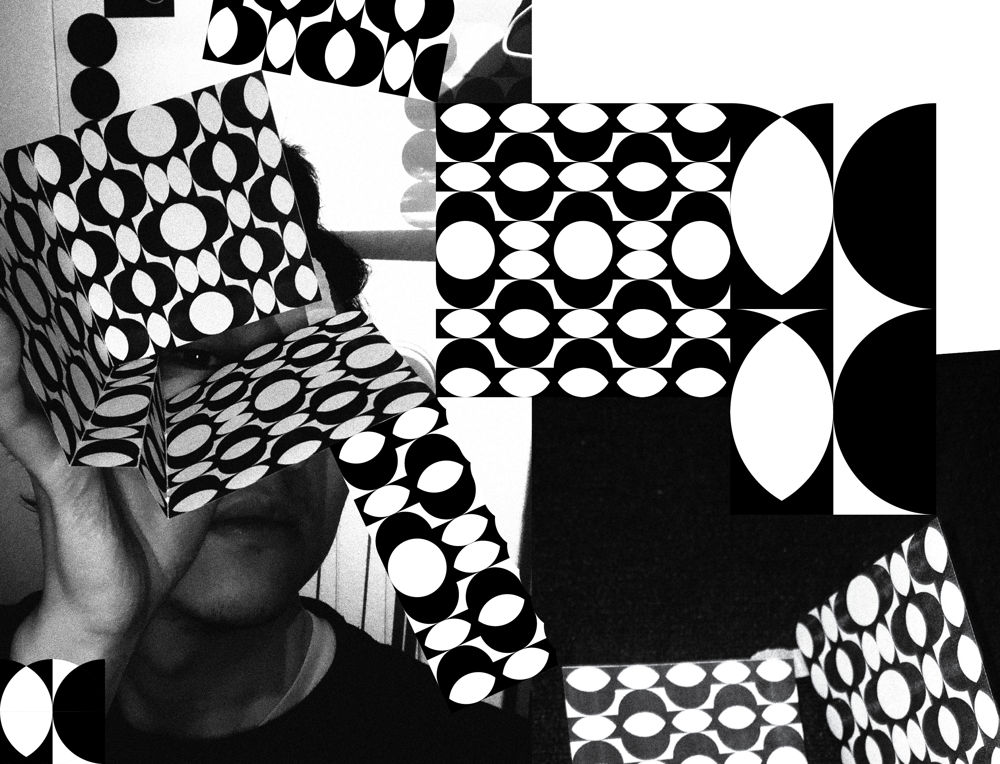
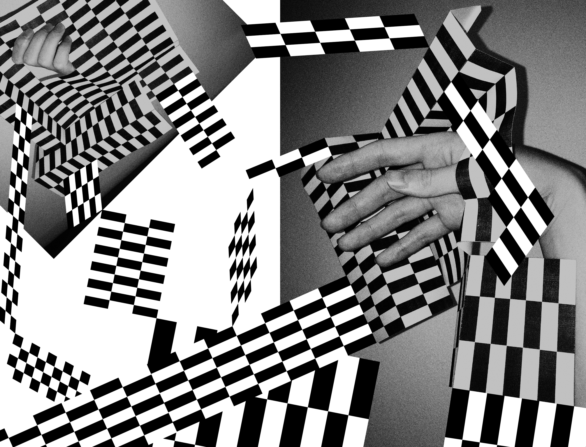

Uniqueness
아날로그인 신체와 디지털인 그래픽 패턴이 교차 반복된다면 그것들의 유일성은 손상되는가? 복제품은 원본에 영향을 주는가? 복제를 통해 우리는 새로운 가능성을 탐색할 수 있는가.
몸 사진을 찍어 디지털로 변환하고 프린트해서 다시 아날로그화하는 행위는 복제인가 복원인가 훼손인가. 디지털 그래픽을 프린트해서 아날로그화하고 사진을 찍음으로써 다시 디지털화시키는 것은 복원을 위한 노력일까 아니면 모욕인가?
이 실험을 통해 그래픽과 신체를 활용하여 의도적으로 혼란을 야기하고, 유일성에 대한 물음을 던집니다.




